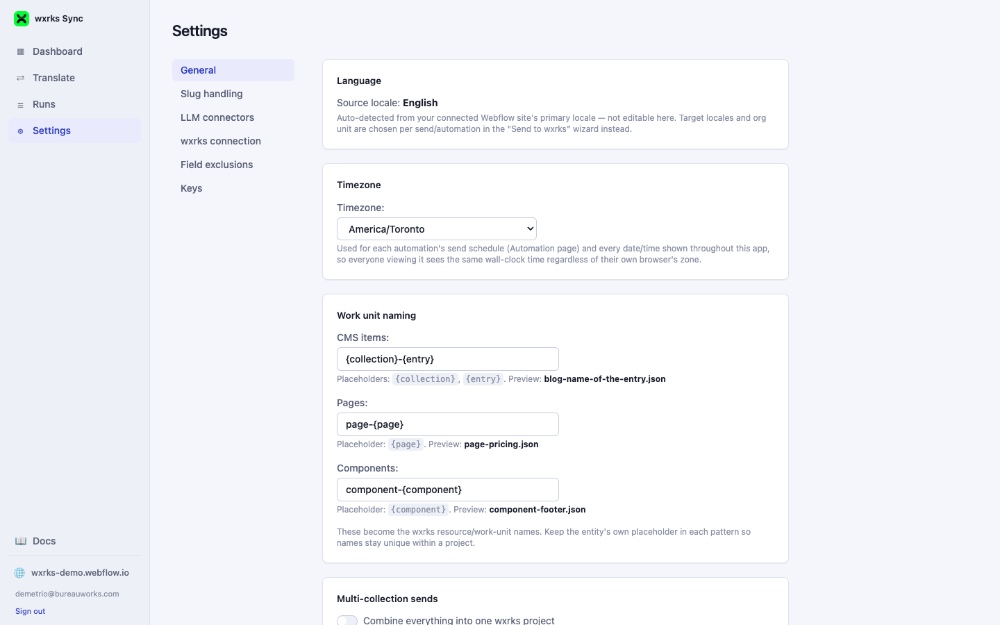
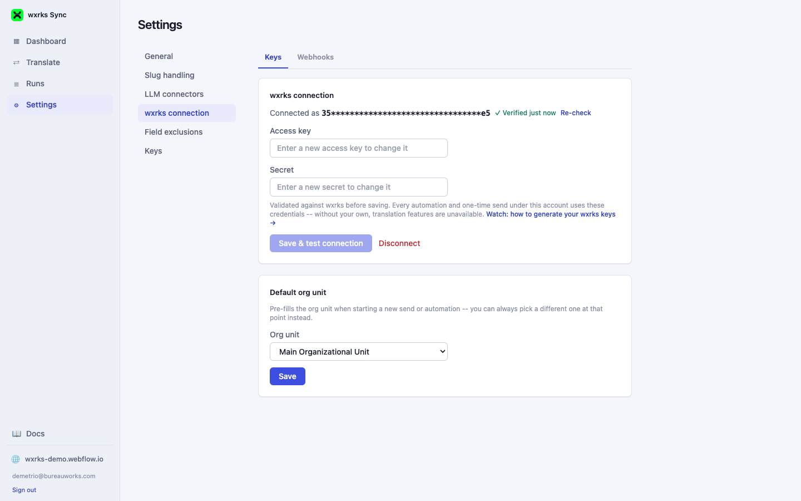
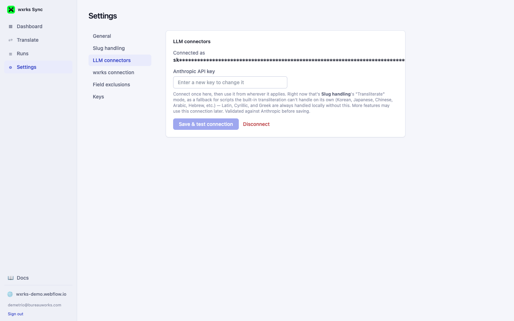

02 · Connecting Your Accounts
Settings — General & connections
Settings is split into tabs down the left. This page covers the three that establish who you're syncing as: General, wxrks connection, and LLM connectors.
General

- Source locale is read-only here — it's auto-detected from your connected Webflow site's primary locale. Target locales are chosen per-send instead, in the Send to wxrks wizard.
- Timezone controls how every date/time in the app is displayed — an automation's send schedule, and every timestamp on the Runs page — so everyone on the team sees the same wall-clock time regardless of their own browser's zone.
-
Work unit naming sets the name pattern wxrks uses for each resource it
creates — separate patterns for CMS items, Pages, and Components, each with its own
placeholder (
{collection},{entry},{page},{component}) so names stay unique per project. - Auto-approve wxrks projects (further down this tab) skips manual approval in wxrks so translation starts immediately after a project is created.
- Multi-collection sends controls what happens when a one-time send spans more than one collection, page, or component: combine everything into a single wxrks project (the default), or create a separate project per group, each named with an auto-added "(1 of N)" suffix.
wxrks connection
Split into two tabs: Keys (your access key/secret and default org unit) and Webhooks (where translations get delivered back to).

Your wxrks access key and secret — these are validated against wxrks's own authentication endpoint the moment you click Save & test connection, so an invalid pair is caught immediately instead of failing confusingly on your first real send. Every automation and one-time send under this account uses these credentials; without them, translation features are unavailable.
Also on this tab: a default org unit, which pre-fills the org unit every time you start a new send or automation (you can always pick a different one at that point instead).
How to generate your wxrks keys
Registering the wxrks delivery webhook
wxrks needs a URL to call once a translation is ready, so it can be written back into Webflow automatically. This is a one-time step you do directly in wxrks, registering the URL for two events: Work Unit Status Changed and Work Unit Translation File Ready.
- In your wxrks account, find the webhook/notification configuration for this integration (this lives in wxrks's own settings, not in this app).
- Register the URL shown on the Webhooks tab of Settings → wxrks connection in this app — copy it directly from there rather than retyping it, so it always matches this app's actual current domain — for both the Work Unit Status Changed and Work Unit Translation File Ready events.
- Save it in wxrks. That tab will show "Active" once the first real delivery arrives.
LLM connectors

An optional Anthropic API key. Today it's used for exactly one thing: as a fallback for Slug handling's "Transliterate" mode, for scripts the built-in transliteration table can't handle on its own (Korean, Japanese, Chinese, Arabic, Hebrew, etc.) — Latin, Cyrillic, and Greek are always handled locally without it. It's kept as its own always-visible tab because more features are expected to use this same connection later (for example, running a marketing-tone prompt over a translation after it comes back from wxrks).